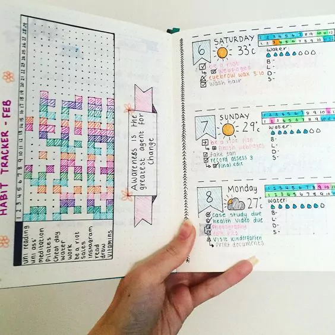
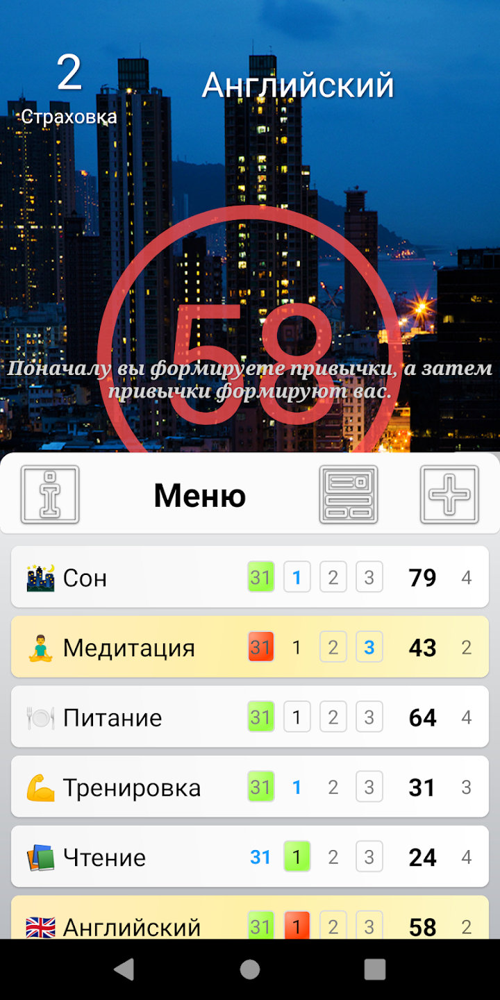
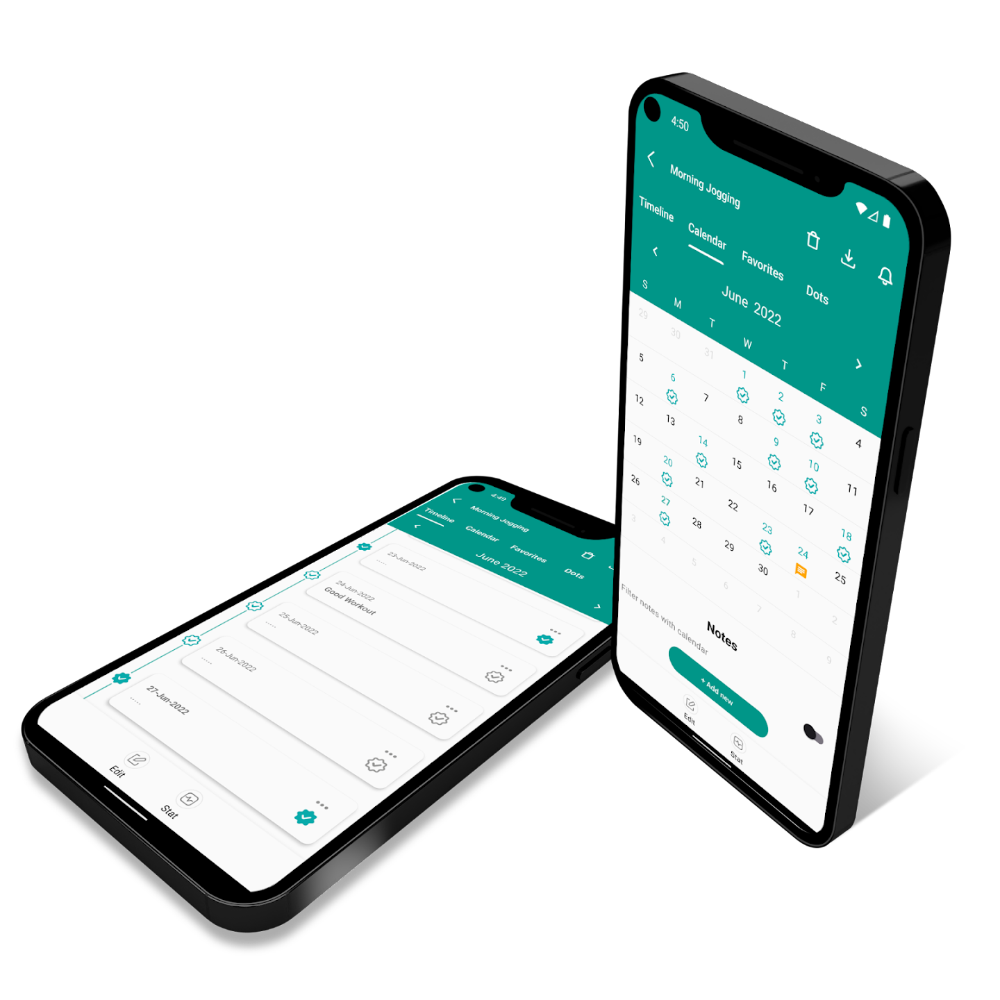

Що таке трекер корисних звичок |
Трекер звичок – це інструмент, який допомагає формувати корисні звички. Це може бути блокнот, лист або додаток із днями тижня. У нього записують звичку та відзначають дні, коли завдання виконане. Трекер допомагає закріплювати нові звички та позбавлятися старих. Щоб закріпити звичку, потрібно повторювати одну і ту ж дію регулярно. Якщо сумлінно займатися на доріжці та не пропускати тренування, поступово звичка бігати приживеться та стане способом життя. Як будинок будують по цеглинці, так звичку закріплюють малими кроками день у день. Часто відбувається так, що працювати над звичкою більше не хочеться. Замість яблука ми вистачаємо печиво зі столу, а замість пробіжки вмикаємо серіал. Так буває, коли навколо нас склалося середовище, яке відволікає від мети. Тарілка з печивом стоїть на столі, а яблука лежать у холодильнику. Щоб з'їсти печиво, достатньо простягнути руку та взяти. А яблуко треба спочатку дістати, а потім ще й помити. Ми робимо те, що легше, не замислюючись. |
До 2003 року професійних велосипедистів Великобританії не сприймали всерйоз. З 1908 року вони вибороли лише одну золоту медаль на Олімпійських іграх. А у гонці «Тур де Франс» не виграли жодного разу за 110 років. Все змінилося, коли керівництво найняло тренера Дейва Бреїлсфорда. Він не просто тренував команду, а змінював середу, щоб покращити здоров'я та комфорт спортсменів. За його вказівкою велосипедні сидіння замінили більш зручними, в шини втирали спирт для кращого зчеплення з дорогою. Спортсменам видали одяг, який підтримує потрібну температуру під час їзди. Дейв стежив за навантаженнями спортсменів за допомогою датчиків, підібрав гель для масажу для швидкого відновлення м'язів та поміняв подушки та матраци, щоб спортсмени краще висипалися. Це лише частина того, що він зробив. У комплексі його дії призвели до разючих результатів. Через 5 років велосипедисти з Великобританії вибороли 60% золотих медалей на Олімпійських іграх у Пекіні. А на Олімпіаді в Лондоні вони встановили 9 олімпійських рекордів та 7 світових.
Ця історія показує, що кожна зміна робить проблему меншою. Якщо приготувати спортивну форму заздалегідь, вранці менше причин залишитися в ліжку. А якщо використати додаткові стимули, то шансів пропустити пробіжку стане ще менше. Додатковим стимулом може стати трекер звичок. Він наочно показує прогрес і допомагає не зупинятися на півдорозі. Нижче розповімо, у чому його секретна сила.
Як працює трекер звичок
Є три причини, через які трекер корисних звичок допомагає нам їх формувати:
- Стає візуальним тригером.
- Трекер сам собою нагадує у тому, що треба зробити завдання.
- Наочно свідчить прогрес.
- Коли бачимо зафарбовані квадратики, з'являється стимул не кидати розпочате.
- Служить винагородою.
- Нам приємно викреслити ще один день, але, щоб зробити це, потрібно виконати завдання.
Розберемо кожну причину докладніше.
- Служить нагадуванням
- Мотивує продовжувати
- Служить винагородою
-
Служить нагадуванням
Трекер нагадує нам, що потрібно виконати завдання. Коли ведеш трекер щодня, то, крім основної звички, виробляється ще одна — звичка вести трекер. Галочки ставити легко та приємно. Щоразу, коли хочеться поставити галочку, трекер нагадує, що для цього треба спочатку 30 разів присісти або прочитати 20 сторінок книги. Тільки потім можна буде порадувати себе та викреслити ще один день.
-
Мотивує продовжувати
Рухатися вперед нас змушує прогрес. Коли ми бачимо заповнені квадратики у трекері звичок, то розуміємо, яку велику роботу зробили. Одні тішаться своїм просуванням, іншим шкода покинути, адже пропаде стільки зусиль. Так трекер служить додатковим стимулом лягати спати під час або вести харчовий щоденник.
-
Служить винагородою
Кожна нова галочка у трекері приносить задоволення. Ви зробили зусилля над собою, позаймалися йогою, і тепер можна нагородити себе, поставивши заповітну галочку. Заповнення трекера викликає радість та бажання продовжувати тренуватися. Якщо вести трекер, то увага буде зосереджена на прогрес, а не на кінцевому результаті. Таке мислення добре мотивує. Уявіть, що ви вирішили навчитися стояти у планці 10 хвилин поспіль. Перші три дні ви простояли хвилину, на четвертий протрималися на тридцять секунд довше. Якщо порівняти півтори хвилини з бажаними 10 хвилинами, то стане зрозуміло, що до мети дуже далеко. Продовжувати тренування буде складніше. Якщо сконцентруватися на процесі, а не цілі, то на четвертий день ви побачите прогрес плюс 30 секунд порівняно з вчорашнім днем. Розуміння, що сьогодні ви можете більше, ніж учора, змушуватиме вас тренуватися далі.
Які трекери бувають
Є два види трекерів – паперові та електронні. Розглянемо кожен докладніше, щоб зрозуміти, кому підходять аркуші на стіні, а кому картки в мобільному телефоні.
Трекери на папері
Найпростіший паперовий трекер – це календар. Можна взяти будь-який і закреслювати щодня, коли ліг спати вчасно чи почитав книгу перед сном.
Трекери-додатки
На PlayMarket є кілька десятків програм, щоб стежити за звичками. Найвищі рейтинги у Idot Habit та Chain Reaction.
 